GTK Engines
Dieser Artikel wurde für die folgenden Ubuntu-Versionen getestet:
Dieser Artikel ist mit keiner aktuell unterstützten Ubuntu-Version getestet! Bitte diesen Artikel testen und das getestet-Tag entsprechend anpassen.
Zum Verständnis dieses Artikels sind folgende Seiten hilfreich:
GTK ist eine Komponentenbibliothek zur Darstellung von grafischen Benutzeroberflächen. Mit GTK werden Schaltflächen, Rollbalken und Menüs auf dem Bildschirm dargestellt. Für die Positionierung und Rahmen von Fenstern ist jedoch wieder ein anderes Programm - der Fenstermanager - zuständig. Bedingt durch die Weiterentwicklung von GTK muss teilweise zwischen GTK2 und GTK3 unterschieden werden.
GTK steht auch nicht alleine da. GTK stellt nur grundlegende Funktionalitäten bereit. Die eigentliche Darstellung der Desktop-Elemente übernehmen GTK-Engines, also Programme, die die GTK-Designs übersetzen. Im Prinzip kann man sich das Zeichnen von Elementen auf dem Bildschirm als Schichtenmodell vorstellen: GTK-Design -> GTK-Engine -> GTK -> XServer.
Ein GTK-Design (engl. Theme) benutzt die Möglichkeiten einer GTK-Engine, die wiederum GTK als Basis nutzt, was letztendlich dann auf dem XServer die Desktopelemente zeichnet. Wie man die Designs wechselt, steht in dem Artikel GTK+/Design wechseln
GTK3 Engines¶
Inzwischen gibt es auch Pakete, die GTK3-Engines anbieten: gtk3-engines.
GTK2 Engines¶
Vorinstallierte Engines¶
Bei der Installation von Ubuntu werden eine ganze Reihe von GTK2-Engines über das Paket
gtk2-engines
 mit apturl
mit apturl
Paketliste zum Kopieren:
sudo apt-get install gtk2-engines
sudo aptitude install gtk2-engines
von Haus aus installiert. Die Engines sind im einzelnen
| GTK2 Engines | ||
| Engine | Beschreibung | Vorschau |
Clearlooks  | Die Standardengine von GNOME 2 | 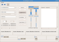 |
| Crux | Einstmals sehr beliebte Engine, von Eazel Inc. entwickelt. inzwischen von Novell übernommen | 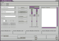 |
| High contrast | Engine für hohe Kontraste, speziell für sehbehinderte Benutzer. | 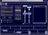 |
| Industrial | Engine, von Ximian für deren Produkte entwickelt. | 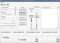 |
| LighthouseBlue | Eine weitere Engine, die auf Bluecurve basiert. | 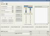 |
| Metal | Sieht wie die bekannte "Metal"-Optik von Java aus. | |
| Mist | Schlichte, schnelle Engine von unaufdringlicher Erscheinung. | 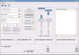 |
| Redmond95 | Bietet ein ähnliches Aussehen wie von Microsoft Windows 95/98. | 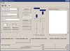 |
| ThinIce | Eine elegante und schnelle Engine mit schlichtem Aussehen. | 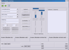 |
Aus den Paketquellen¶
Hier einige weitere Engines, die sich direkt aus den Paketquellen installieren lassen.
QtCurve¶
Die QtCurve Theme Engine ist eine GTK-Engine, die eine optisch reibungslose Einbindung von GNOME-Anwendungen in die KDE-Desktopumgebung gewährleisten soll. Die Engine ruft Qt zum Darstellen der Elemente auf. Individuelle Einstellungen lassen sich in KDE unter
"K-Menü -> Systemeinstellungen -> Erscheinungsbild -> GTK-Stile und Schriftarten"
vornehmen. Die Engine wird bei der Installation von Kubuntu über eine Empfehlung mitinstalliert. Sollte man sie einzeln hinzufügen wollen, so kann man sie über das folgende Paket installieren:
gtk2-engines-qtcurve (universe)
mit apturl
Paketliste zum Kopieren:
sudo apt-get install gtk2-engines-qtcurve
sudo aptitude install gtk2-engines-qtcurve
| 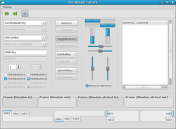 |
| Aurora |
Aurora¶
Aurora stammt von Clearlooks bzw. Murrine ab. Die Engine ist im folgenden Paket enthalten:
gtk2-engines-aurora (universe)
mit apturl
Paketliste zum Kopieren:
sudo apt-get install gtk2-engines-aurora
sudo aptitude install gtk2-engines-aurora
Allerdings gab es Schwierigkeiten bei der Darstellungen von Apache OpenOffice- und Java-Applikationen. Diese Anwendungen emulierten GTK und sahen nicht gut aus, wenn Aurora als GTK-Engine genutzt wurde.
| 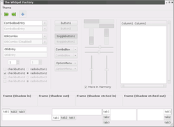 |
| Cleanice |
Cleanice¶
Cleanice ist eine sehr schlichte und dafür schnelle GTK-Engine. Trotz des schlichten Aufbaus ist die Engine immer noch ansprechend im Aussehen. Die GTK-Engine lässt sich aus den Paketquellen von Ubuntu installieren. Es muss nur das folgende Paket installiert werden:
gtk2-engines-cleanice (universe)
mit apturl
Paketliste zum Kopieren:
sudo apt-get install gtk2-engines-cleanice
sudo aptitude install gtk2-engines-cleanice
| 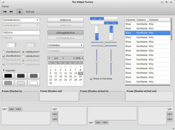 |
| Equinox |
Equinox¶
Equinox stammt von Aurora ab. Die Engine ist ab Ubuntu 10.10 in diesem Paket enthalten:
gtk2-engines-equinox (universe)
mit apturl
Paketliste zum Kopieren:
sudo apt-get install gtk2-engines-equinox
sudo aptitude install gtk2-engines-equinox
Ein PPA mit der aktuellen Version ist ebenfalls vorhanden.
| 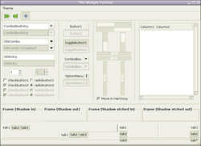 |
| Magic Chicken |
Magic Chicken¶
Das Paket enthält Designs, die es erlauben, das Aussehen von Programmen auf GTK+ 2.x zu konfigurieren. Die Programme benötigen keinerlei Modifikationen, um Designs zu benutzen. Die Unterstützung ist in GTK+ 2.x enthalten. "Magic Chicken" ist eine experimentelle Engine, das viele Anleihen in Bezug auf das Aussehen sowohl beim voreingestellten GTK+ 2.x Design als auch von ThinIce und anderen "individuellen" Designs macht.
Magic Chicken lässt sich aus den Paketquellen von Ubuntu installieren. Installiert [1] werden muss folgendes Paket:
gtk2-engines-magicchicken (universe )
mit apturl
Paketliste zum Kopieren:
sudo apt-get install gtk2-engines-magicchicken
sudo aptitude install gtk2-engines-magicchicken
| 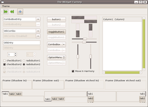 |
| Murrine |
Murrine¶
Murrine ist eine elegante Engine auf Basis von Clearlooks. Laut den Entwicklern ist die Engine rund 30% schneller als Clearlooks oder Ubuntulooks, da der Quelltext optimiert und langsame Farbverläufe entfernt wurden. Die Murrine Engine kann direkt aus den offiziellen Paketquellen installiert werden:
gtk2-engines-murrine (universe)
mit apturl
Paketliste zum Kopieren:
sudo apt-get install gtk2-engines-murrine
sudo aptitude install gtk2-engines-murrine
| 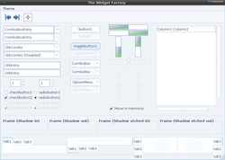 |
| Pixbuf |
Pixbuf¶
Pixbuf (oft auch Pixmap) ist eine GTK-Engine, die Bilder zum Anzeigen der Desktopelemente nutzt. Dadurch ist die Engine hochflexibel, und so gut wie alle Designs lassen sich realisieren. Allerdings wird sie nicht mit der Geschwindigkeit von schlankeren Engines mithalten können.
Die Pixbuf Engine lässt sich aus den offiziellen Paketquellen installieren:
gtk2-engines-pixbuf (universe)
mit apturl
Paketliste zum Kopieren:
sudo apt-get install gtk2-engines-pixbuf
sudo aptitude install gtk2-engines-pixbuf
| 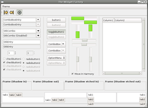 |
| Xfce |
Xfce¶
Die Desktopumgebung Xfce baut ebenfalls auf GTK auf. Xfce benutzt eine eigene GTK-Engine, die natürlich aus der Paketverwaltung heraus installiert werden kann. Dazu muss nur das folgende Paket installiert werden:
gtk2-engines-xfce (universe)
mit apturl
Paketliste zum Kopieren:
sudo apt-get install gtk2-engines-xfce
sudo aptitude install gtk2-engines-xfce
Bei der Installation von Xubuntu wird diese Engine selbstverständlich von Haus aus installiert. Die Engine und deren Designs lässt sich aber auch unter GNOME nutzen.
Weitere Engines¶
Zusätzlich können noch mahr GTK2-Engines installiert werden, die nicht aus den Paketquellen installierbar sind. Es existieren oft .deb-Pakete, die man herunterladen und installieren kann, einige wenige muss man aus dem Quelltext kompilieren.
| 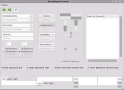 |
| Candido |
Candido¶
Candido und "Candido Desktop" ist ein Projekt, um dem GNOME-Desktop ein neues Gesicht zu geben. So existieren eine eigene GTK2-Engine und dazu passende Designs für GTK, Metacity, GDM usw..
Die Candido-Engine ist nicht in den Paketquellen von Ubuntu enthalten. Es gibt auf der Homepage jedoch ein .deb-Paket für Ubuntu, das sich sehr einfach installieren [3] lässt.
Hinweis!
Fremdpakete können das System gefährden.
| 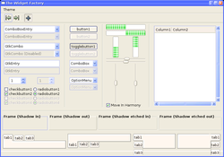 |
| eXperience |
eXperience¶
eXperience ist eine GTK2-Engine, die das Aussehen eines weiteren bekannten Betriebssystems nachahmen soll. Designs, die diese Engine benutzen, findet man auf dieser Seite:
Dieses Design entspricht ziemlich gut Windows XP. Verschiedene Farbstile stehen dabei zur Verfügung. Diese GTK-Engine lässt sich nicht aus den Paketquellen installieren. Man muss sie selber kompilieren [2].
| 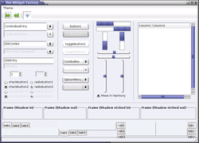 |
| Geramik |
Geramik¶
Geramik ist ein GTK2-Engine mit der Absicht, GTK-Anwendungen ein ähnliches Aussehen wie dem früheren KDE-Stil "Keramik" zu geben. Die Engine ist eine gehackte/modifizierte Version der Original-Pixmap-Engine von GTK, die verändert wurde, um Widget-Farben aus der Datei .qt/qtrc im Heimatverzeichnis zu erhalten. Das bedeutet, das GTK-Anwendungen dem KDE-Farbschema folgen.
Diese Engine ist also sehr gut geeignet, wenn man GNOME-Anwendungen unter KDE betreiben möchte. Da Geramik nicht mehr in den Paketquellen enthalten ist, kann stattdessen QtCurve verwenden werden.
| 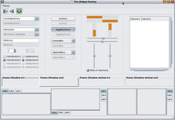 |
| Nimbus |
Nimbus¶
Nimbus ist eine weitere GTK2-Engine, die als Standard in OpenSolaris genutzt wird. Der dazugehörige gleichnamige Stil und das Symbolthema haben einen ganz eigenen "Retro"-Charme. Auf gnome-look.org sind sowohl Fremdpakete als auch Hinweise zum Quelltext bzw. zur Kompilation aus dem Quelltext zu finden.
Hinweis!
Fremdpakete können das System gefährden.
| 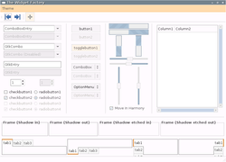 |
| Rezlooks |
Rezlooks¶
Rezlooks ist eine Abwandlung der Clearlooks-Engine, für die es zahlreiche Designs gibt. Die Engine ist schlicht und sehr schnell.
Die Rezlooks Engine ist nicht aus den Paketquellen von Ubuntu installierbar. Auf der Projektseite findet man jedoch den Quelltext, der sich recht leicht kompilieren lässt oder - für die Bequemen - auch fertige .deb-Pakete, die über die Paketverwaltung installierbar [3] sind.
Hinweis!
Fremdpakete können das System gefährden.
GTK-Engines kompilieren¶
Möchte man eine GTK2-Engine kompilieren, so sind zumindest die folgende Programmbibliothek und die davon abhängigen Pakete notwendig:
libgtk2.0-dev
mit apturl
Paketliste zum Kopieren:
sudo apt-get install libgtk2.0-dev
sudo aptitude install libgtk2.0-dev
Anschließend kann man GTK-Engines kompilieren [2]. Allerdings gilt es das Prefix zu beachten. Hier sind GTK-Engines anspruchsvoll. Sie müssen in /usr installiert werden. Daher muss man
./configure --prefix=/usr
ausführen. Ansonsten sind GTK-Engines "normale" Programme, die keine besonderen Kenntnisse beim Kompilieren erfordern.
Designs vergleichen¶
Auf den verschiedenen Webseiten mit Designs für GNOME und Xfce findet man unzählige Designs. Oftmals ist es schwer, diese Designs zu vergleichen. Um ein Design "objektiv" mit dem anderen zu vergleichen, so kann man das Programm The Widget Factory benutzen. Das Programm stellt alle GTK2-Elemente in einem Fenster dar.
The Widget Factory lässt sich direkt aus den offiziellen Paketquellen installieren:
thewidgetfactory (universe)
mit apturl
Paketliste zum Kopieren:
sudo apt-get install thewidgetfactory
sudo aptitude install thewidgetfactory
Für das Programm wird kein Starteintrag angelegt. Es lässt sich über den Befehl
twf
starten [4]. Alle Bildschirmfotos ("screenshots") auf dieser Seite stammen von "The Widget Factory" mit dem entsprechenden Design.
- Erstellt mit Inyoka
-
 2004 – 2017 ubuntuusers.de • Einige Rechte vorbehalten
2004 – 2017 ubuntuusers.de • Einige Rechte vorbehalten
Lizenz • Kontakt • Datenschutz • Impressum • Serverstatus -
Serverhousing gespendet von